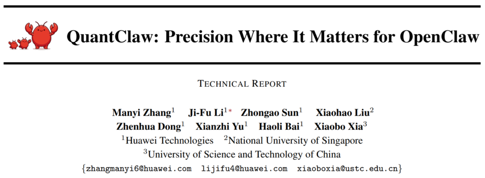
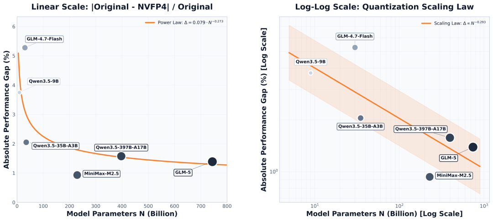
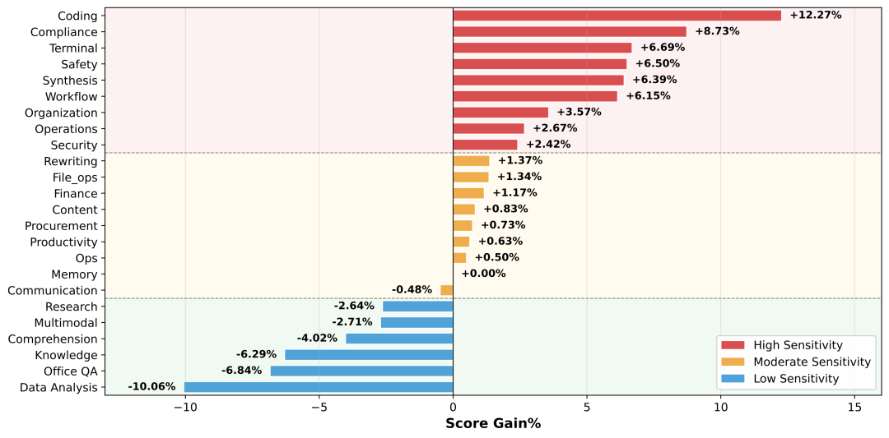
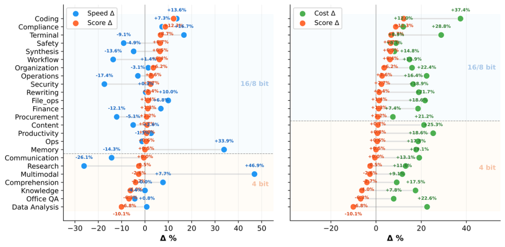
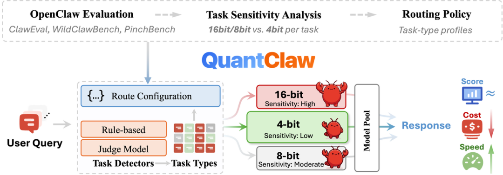
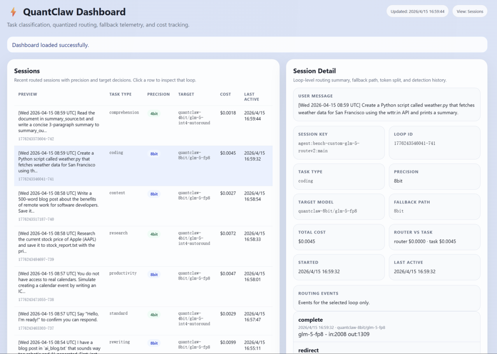
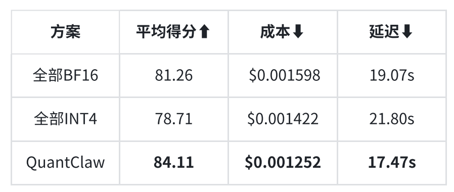
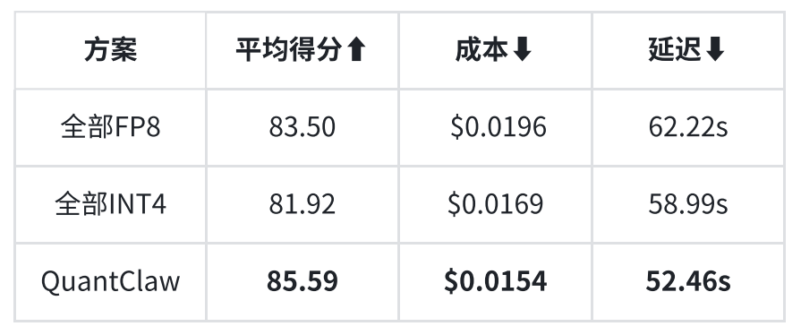

💡 OpenClaw太贵？QuantClaw帮你挑精度，成本砍掉21%，还能提速15%
OpenClaw too expensive? QuantClaw picks precision, cuts costs 21%, speeds up 15%
社区是国内外知名的机器学习与自然语言处理社区，受众覆盖blanket[ˈblæŋkɪt] v. 覆盖，掩盖；用毯覆盖国内外NLP硕博生、高校老师以及企业研究人员。
是促进国内外自然语言处理，机器学习学术界、产业界和广大爱好者amateur[ˈæməˌʧər] n. 爱好者；业余爱好者；外行之间的交流和进步，特别是初学者同学们的进步。
华为联合alliance[əˈlaɪəns] n. 联盟，联合；联姻新加坡国立大学和中国科学技术大学研究人员提出 QuantClaw。
这是一款面向 OpenClaw 的即插即用动态模型精度路由插件，基于大规模低精度量化实证研究，让模型精度成为可动态分配的资源，实现服务质量不降反升、成本下降、延迟降低的depressed[dɪˈprɛst] adj. 沮丧的； 降低的三重收益。

🔗 项目主页：https://sparkengineai.github.io/QuantClaw/
🔗 GitHub 仓库barn[bɑrn] n. 谷仓,仓库：https://github.com/SparkEngineAI/QuantClaw-plugin
🔗 arXiv 论文thesis[ˈθiˌsɪs] n. 论文；论点：https://arxiv.org/abs/2604.22577
2026 年，OpenClaw 已经成长为最火爆的开源 AI Agent 框架framework[ˈfreɪmˌwərk] n. 框架，骨架；结构，构架之一。它不只是「聊天机器人」，而是能操控浏览器、执行 Shell 命令、读写文件、管理记忆的memorial[məˈmɔriəl] adj. 记忆的,纪念的全功能数字助手。但真正用过 OpenClaw 的开发者和用户都知道acquaintance[əkˈweɪntəns] n. 熟人；相识；了解；知道一个痛点：Token 消耗太猛了。
一个看似简单的gut[gət] adj. 简单的；本质的，根本的；本能的，直觉的查询，可累积消耗超 23 万 Token，你付的钱不只是为了那个最终答案，而是在为整个 Agent 系统的「运行开销」买单。更糟的是，目前这些系统通常以固定anchor[ˈæŋkər] v. 抛锚；使固定；主持节目精度运行。无论任务是简单查个资料，还是写一段复杂代码，模型都在全力输出，导致不同任务复杂度与计算资源之间缺乏absence[ˈæbsəns] n. 缺席，不在；缺乏，不存在匹配机制。该策略同时带来不必要的superfluous[ˈsupərflˌwəs] adj. 多余的；不必要的；奢侈的计算开销、推理延迟增加以及整体成本上升。
量化（Quantization）是业界常用的staple[ˈsteɪpəl] adj. 主要的，大宗生产的；常用的；纺织纤维的降本手段。把模型的数值精度从 32 位浮点压缩到 4 位甚至 2 位，能显著减少内存占用和计算calculate[ˈkælkjəˌleɪt] v. 计算,推算；预测，估计量。但问题是：量化对复杂 Agent 任务assignment[əˈsaɪnmənt] n. 任务；作业的影响到底有多大？所有任务都适合adjust[əˈʤəst] v. 调整，使…适合；校准压低精度吗？目前仍缺乏deficiency[dɪˈfɪʃənsi] n. 缺乏,不足；缺点,缺陷系统性的研究来回答这一问题。
华为联合ally[ˈælaɪ] v. 使联盟；使联合新加坡国立大学、中国科学技术大学，对 OpenClaw 工作负载进行了系统性的量化研究，基于 ClawEval 评测集（release v0.0.0），覆盖 24 类任务、104 个实例、6 个主流大模型（9B–744B），系统揭示了 OpenClaw 框架下 Agent 量化的核心规律：
（1）Scaling Effect：模型越大，量化容忍abide[əˈbaɪd] v. 忍受，容忍；停留；遵守度越高

在 OpenClaw 量化评测结果上，研究团队发现了一个清晰的plain[pleɪn] adj. 平的；简单的；朴素的；清晰的模型规模和性能下降之间的关系：
小模型（<30B）：量化后性能下降decline[dɪˈklaɪn] n. 下降；衰退；斜面 3-5%。
中等模型（30B-70B）：下降descend[dɪˈsɛnd] v. 下降；下去；下来；遗传；屈尊通常在 2% 以内。
大模型（200B+）：下降descent[dɪˈsɛnt] n. 下降；血统；袭击不到 2%，部分模型（如 GLM-5、MiniMax-M2.5）量化后反而有轻微性能提升（+0.9% 到 +1.4%）。
实验结果显示，模型规模与量化误差容忍度呈正相关，这可能源于更大参数量的quantitative[kˈwɑntɪˌteɪtɪv] adj. 定量的；量的，数量的模型拥有更高的表征冗余，从而削弱了量化噪声的影响。
（2）量化对 Agent 的影响，显著依赖任务类型breed[brid] n. [生物] 品种；种类，类型
研究团队对所有测试模型的结果haul[hɔl] n. 拖，拉；用力拖拉；努力得到的结果；捕获物；一网捕获的鱼量；拖运距离取平均值并进行任务敏感度分析，根据敏感度将 OpenClaw 任务分为三类：高、中、低。

高精度敏感区（推荐 16bit/8bit）：涉及代码生成、安全关键决策和复杂操作工作流的任务对量化高度altitude[ˈæltɪtjuːd] n. 高度， 海拔敏感。这些领域的共同特征是需要精确的边界判断，模型输出的微小扰动都可能导致性质完全错误的erroneous[ɛˈroʊniəs] adj. 错误的；不正确的行为，例如错误的工具调用、策略违规或代码逻辑错误。
低精度友好区（推荐 4bit）：知识检索、分析analyze[ˈænəˌlaɪz] vt. 分析； 分解类与问答类任务对量化具有较强容忍度，有的甚至还能小幅提升。这可能是因为量化充当了隐式正则化器的角色，从而促进accelerate[ækˈsɛlərˌeɪt] v. 使加速，使增速，促进；加速更具泛化性的表示。
（3）如何实现accomplish[əˈkɑmplɪʃ] v. 完成；实现；达到得分、速度与成本的平衡？

真正决定是否应该对某个任务使用低精度，不能只看分数变化，必须把速度和成本costing[ˈkɒstɪŋ] n. 成本一起纳入考量。基于任务敏感性分析，研究enquiry[ɪnkˈwaɪˌri] n. 打听， 询问；调查， 研究团队给出了两种实用的优化视角：
得分 vs 速度（更快）：在不牺牲质量的前提下降低decrease[ˈdiˌkris] v. 减少,变少,降低推理时延，优先选择速度收益大于分数边际变化的任务。
得分 vs 成本（更便宜cheaper[ˈtʃiːpə] adj. 更便宜）：在质量基本持平的情况下压低推理成本，重点关注成本降低时仍能保持或提升质量的任务。
QuantClaw：开箱即用的精度调度引擎基于以上发现，研究团队推出了 QuantClaw，一个为 OpenClaw 设计的centigrade[ˈsɛntəˌgreɪd] adj. 摄氏温度计的;摄氏的即插即用的任务路由量化插件。

（1）QuantClaw 的工作逻辑非常deadly[ˈdɛdli] adv. 非常；如死一般地清晰：
任务识别：用户发来请求，QuantClaw 首先判断它属于belong[bɪˈlɔŋ] v. 属于，应归入；居住；适宜；应被放置哪种任务类型。
精度路由：根据预设的「任务-精度敏感度档案」，自动将请求分配allocate[ˈæləˌkeɪt] v. 分配，分派；拨给给 4bit、8bit 或 16bit 的模型实例。
透明执行administer[ədˈmɪnɪstər] v. 管理；执行；给予：用户无感知，不用手动选择精度，系统在后台完成一切。
（2）QuantClaw 的架构设计contrive[kənˈtraɪv] v. 设计；发明；图谋兼顾了实用性和灵活性：

结合bind[baɪnd] v. 结合；装订；有约束力；过紧规则和判别模型检测，对用户请求进行任务类型分类，无需用户参与
每个请求映射到预定义的精度层级（如4-bit、8-bit或16-bit），并路由到对应correspond[ˌkɔrəˈspɑnd] vi. 通信；符合， 一致；相当于， 对应精度的模型
任务类型genre[ˈʒɑnrə] n. 体载， 类型、关键词、正则模式、目标模型、价格策略均可自定义
实时Dashboard展示路由决策、token消耗consume[kənˈsum] v. 消耗；消费；吃；喝、成本、会话和配置等核心指标
实测效果：省钱、提速、分数fraction[ˈfrækʃən] n. 小部分,一点儿；分数还涨了
研究团队在 PinchBench 上进行端到端评估appraisal[əˈpreɪzəl] n. 对...作出的评价；评价，鉴定，评估。结果表明，QuantClaw 在省钱提速的同时，任务完成attain[əˈteɪn] v. 完成；获得；达到质量反而更高。低敏感任务用低精度高效执行，高敏感任务保留高精度确保可靠，实现整体上更好的preferable[ˈprɛfərəbəl] adj. 更好的，更可取的；更合意的质量、成本和时延平衡。
（1）GLM-4.7-Flash（PinchBench v1.2.0）：相比beside[ˌbiˈsaɪd] prep. 在...旁边，在...附近；和...相比 BF16 基线，得分 +2.85，成本 -21.6%，延迟 -8.4%

（2）GLM-5（PinchBench v2.0.0）：相比 FP8 基线，得分 +2.09，成本 -21.4%，延迟latency[ˈleɪtənsi] n. 延迟 -15.7%

展望QuantClaw 不止是一个插件，更提供了一种将精度纳入系统调度的实现路径：把精度当作像算力computing[ˈkɒmpjuːtɪŋ] n. 算力、内存一样的动态调度资源；轻任务跑低成本配置，重任务保留reservation[ˌrɛzərˈveɪʃən] n. 预约，预订；保留高精度。
当精度成为可动态调配的资源，Agent 系统才能真正从演示demo[ˈdeməʊ] n. 演示场景走向生产级应用。未来，个人 AI 助手不再是「单模型满负荷跑」，而是多精度、多能力capability[ˌkeɪpəˈbɪləti] n. 能力协同的智能系统。QuantClaw 正是这一方向的clockwise[ˈklɑkˌwaɪz] adj. 顺时针方向的关键一步。
姓名-学校/公司establishment[ɪˈstæblɪʃmənt] n. 确立，制定；公司；设施-研究方向
（如：小张-哈工大-对话dialog[ˈdaɪəlɔg] n. (dialogue)对话,对白系统）
自然语言处理cope[koʊp] v. 处理；对付；竞争/Pytorch
是由国内外机器学习与自然语言处理学者联合构建的民间学术社区，目前已经发展为国内外知名的机器学习与自然语言处理社区，旨在促进机器学习，自然语言处理学术界、产业界和广大爱好者lover[ˈləvər] n. 爱人，恋人；爱好者之间的进步。
社区可以为相关从业者practitioner[prækˈtɪʃənər] n. 开业者，从业者，执业医生的深造、就业及研究等方面提供开放交流平台。欢迎大家关注和加入enroll[ɪnˈroʊl] v. 登记；使加入；把记入名册；使入伍我们。